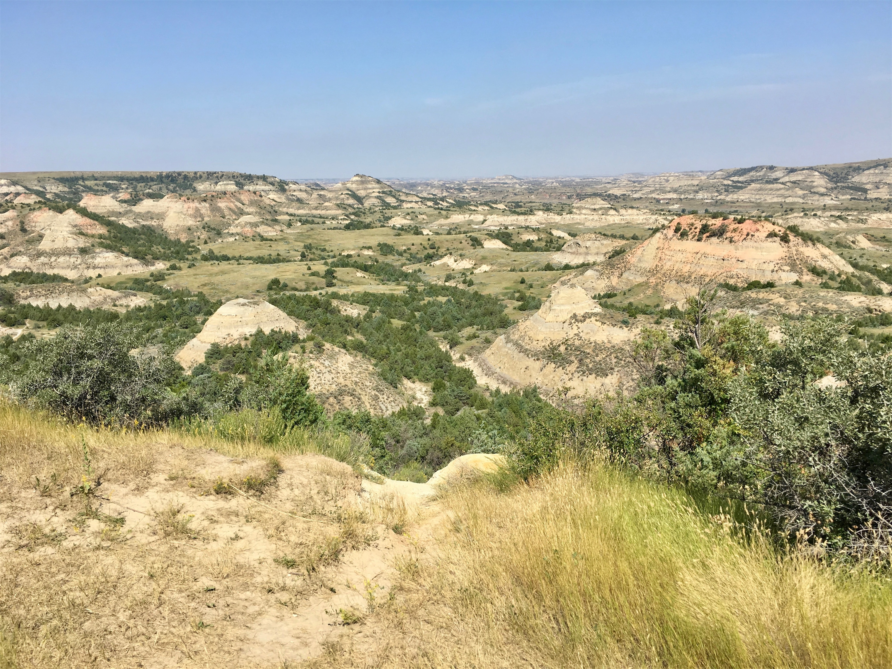

Wednesday, Aug 8, 2018, 11:11 AM MDT
Theodore Roosevelt National Park South Unit, Belfield, ND, United States
88°F Sunny
88°F Sunny
![]()
8/7 Pinnacles Entrance, SD -> Bowen, ND 216 mi, 3.75 hr
8/8 Bowen, ND -> Painted Canyon Visitor Center, ND 69 mi, 1.25 hr
8/8 Painted Canyon Visitor Center, ND -> South Unit Visitor Center, ND 8 mi, 0.25 hr
8/8 South Unit Visitor Center, ND -> Scenic Loop Drive (RT) 36 mi, 2.25 hr
8/8 South Unit Visitor Center, ND -> Bismark, ND 131 mi, 2 hr
8/9 Bismark, ND -> Woodbury, MN 443 mi, 7.5 hr
Trip Total: 12,071 mi
Heading back toward Rapid City from the Badlands, Google Maps steered us away from Sturgis on a dirt and gravel road, but we were still embedded with uncountable motorcycles, and passed many of their camping grounds and bars. Eventually, they faded away and we were back in rolling fields, some of which were filled with an army of sunflowers that faced the sun in unison . We stopped in Bowen for our overnight stay and headed toward the Park in the morning.
Roosevelt Park has a number of distinct pieces, notably the North and South Unit, which are about an hour apart. Lacking time and energy, we opted to only do the south part, which was right off of I-94, our route home. We first made a quick stop at a mini area of the park called Painted Canyon, which reminded us of the South Dakota badlands, and was just as surprising to find in the middle of rolling farmland. In the South Unit, we drove the 36 mile Scenic Loop Drive, which had some pretty significant construction delays and closed overlooks. Overall, it looked like a greener Badlands throughout, with one area that had a huge bison herd. We continued on to Bismark for our last overnight stop, and made the final long drive home the next morning.
Although this last park on this road trip (the 34th, and the 38th in the last year) wasn’t as spectacular as most others, it was nice to end it with a nod to Teddy Roosevelt, the conservation president who championed so much protection of our most treasured natural sites. He established five national parks and 150 national forests. He also created the Forest Service and enacted the 1906 Antiquities Act that he used to establish 18 national monuments. Overall, he protected 250 million acres. We reaped the benefits of his advocacy for nature, and we enjoyed it all with an $80 annual pass.
As a fitting end to our trip, we simply want to quote Wallace Stegner in 1983, who says it all:
"National parks are the best idea we ever had. Absolutely American, absolutely democratic, they reflect us at our best rather than our worst."
